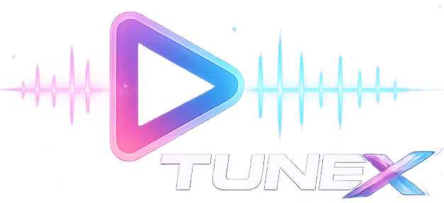

Tutti
Favoriti
Local
File
Pulisci
Seleziona un canale
In attesa
Caricamento video...
Play
Stop
Next
Voice
🎚️ EQUALIZZATORE (15 BANDE)
20 Hz
40 Hz
80 Hz
160 Hz
320 Hz
640 Hz
1.2 kHz
2.5 kHz
5 kHz
10 kHz
15 kHz
20 kHz
25 kHz
30 kHz
40 kHz
RESET
🎚️ PRESET...
⚪ Flat
🔊 Bass Boost
🎵 Treble
🎤 Vocal
🎸 Rock
🎧 Pop
🎷 Jazz
🎻 Classical
🎛️ Electronic
💃 Dance
🎙️ Podcast
🎪 Live
🎤 Hip Hop
🎸 Metal
🌊 Ambient
🤠 Country
🎵 R&B Soul
🎮 Gaming
🎬 Cinema
🌙 Night Mode
🔊 Loudness
🎻 Acoustic
🎹 EDM
🏖️ Reggae
🎷 Blues
🌲 Folk
🧘 Meditation
📻 Radio Vintage
🎧 Headphone
🔊 Speaker
🚗 Car Audio